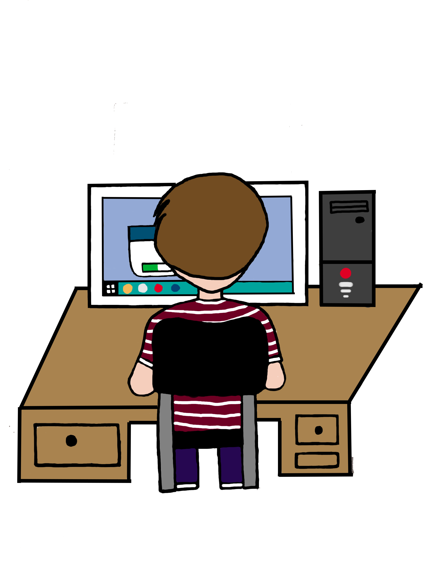
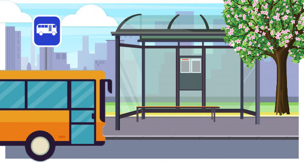
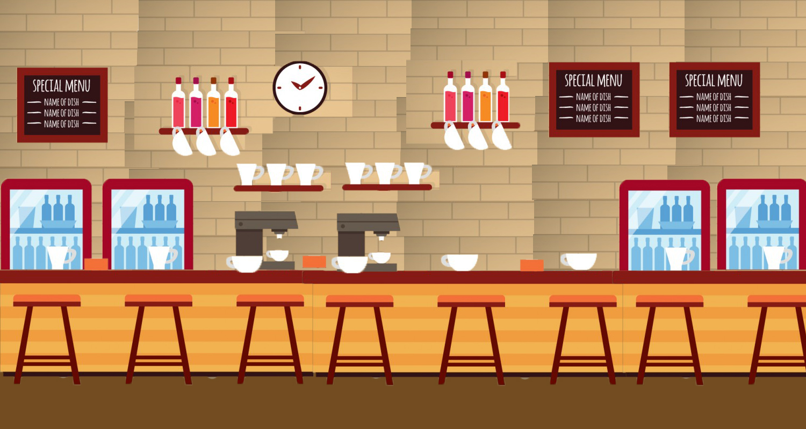
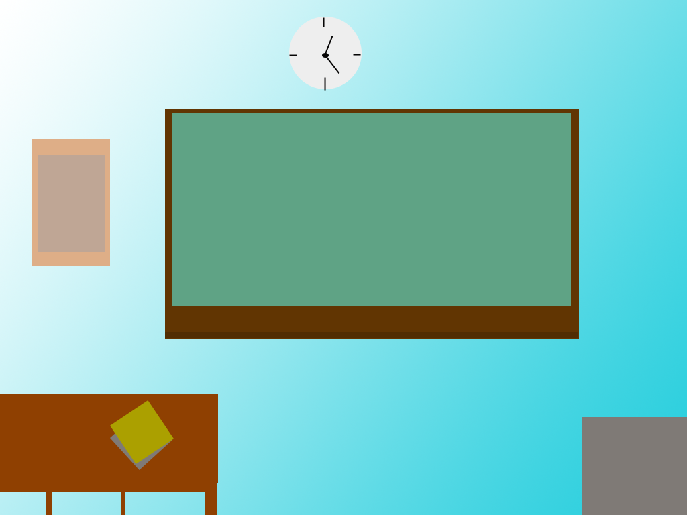
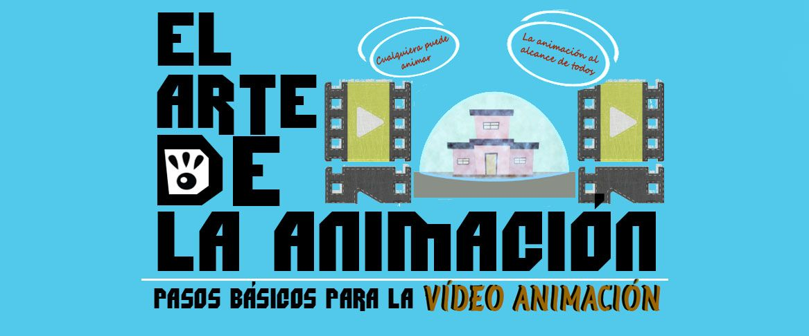

FES CUAUTITLAN
La Facultad de Estudios Superiores Cuautitlán es una entidad académica multidisciplinaria de la
Universidad Nacional Autónoma de México (UNAM), ubicada en el municipio de Cuautitlán Izcalli,
Estado de México. Fue la primera unidad multidisciplinaria construida fuera de Ciudad Universitaria.

LICENCIATURA EN INFORMATICA
La Licenciatura en Informática forma profesionistas capaces de crear, administrar y mantener
servicios y sistemas de información integrada y eficiente que faciliten la toma de decisiones y
agilicen las operaciones de una organización.

ALUMNOS
Los alumnos son elementos indispensable cuando se habla de educacion autogestiva

TRANSPORTE
Parte de los escenarios que puede utilizar el usuario

cafeteria
Parte de los escenarios que puede utilizar el usuario

PIZARRON
Parte de los escenarios que puede utilizar el usuario

SALON DE CLASES
Parte de los escenarios que puede utilizar el usuario

APRENDIZAJE AUTOGESTIVO
Ciudad Virtual es una herramienta la cual puede utilizar para crear recursos didacticos de apoyo con
la finalidad de generar conocmiento.
PROFESORES
Elemento indispensable para la enseñanza, un avatar elemental.
{kind=link}
{kind=link}
{kind=link}
{kind=link}
{kind=link}
{kind=link}